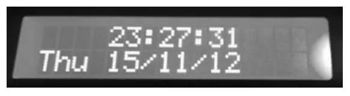

In this project we’ll use the functions from Project 57 to display the time and date on a standard character LCD, similar to the one used in the GPS receiver in Project 44.
The Hardware
Here’s what you’ll need to create this project:
- Arduino and USB cable
- Various connecting wires
- One breadboard
- ProtoScrewShield or similar product
- LCD module or Freetronics LCD shield
- Real-time clock module (shown earlier in the chapter)
First, re-create the hardware used in Project 57. If you connected the RTC module with wires into the Arduino, use a ProtoScrewShield instead to interface with the RTC. Then insert your LCD shield on top of the other shields.
The Sketch
Enter but do not upload the following sketch:
// Project 58 - Creating a Simple Digital Clock
#include "Wire.h"
#define DS3232_I2C_ADDRESS 0x68
❶ #include <LiquidCrystal.h>
LiquidCrystal lcd( 8, 9, 4, 5, 6, 7 );
// Convert normal decimal numbers to binary coded decimal
byte decToBcd(byte val)
{
return( (val/10*16) + (val%10) );
}
// Convert binary coded decimal to normal decimal numbers
byte bcdToDec(byte val)
{
return( (val/16*10) + (val%16) );
}
void setup()
{
Wire.begin();
❷ lcd.begin(16, 2);
// set the initial time here:
// DS3232 seconds, minutes, hours, day, date, month, year
❸ //setDS3232time(0, 27, 0, 5, 15, 11, 12);
}
void setDS3232time(byte second, byte minute, byte hour, byte dayOfWeek, byte
dayOfMonth, byte month, byte year)
{
// sets time and date data to DS3232
Wire.beginTransmission(DS3232_I2C_ADDRESS);
Wire.write(0); // set next input to start at the seconds register
Wire.write(decToBcd(second)); // set seconds
Wire.write(decToBcd(minute)); // set minutes
Wire.write(decToBcd(hour)); // set hours
Wire.write(decToBcd(dayOfWeek)); // set day of week (1=Sunday, 7=Saturday)
Wire.write(decToBcd(dayOfMonth)); // set date (1 to 31)
Wire.write(decToBcd(month)); // set month
Wire.write(decToBcd(year)); // set year (0 to 99)
Wire.endTransmission();
}
void readDS3232time(byte *second,
byte *minute,
byte *hour,
byte *dayOfWeek,
byte *dayOfMonth,
byte *month,
byte *year)
{
Wire.beginTransmission(DS3232_I2C_ADDRESS);
Wire.write(0); // set DS3232 register pointer to 00h
Wire.endTransmission();
Wire.requestFrom(DS3232_I2C_ADDRESS, 7);
// request seven bytes of data from DS3232 starting from register 00h
*second = bcdToDec(Wire.read() & 0x7f);
*minute = bcdToDec(Wire.read());
*hour = bcdToDec(Wire.read() & 0x3f);
*dayOfWeek = bcdToDec(Wire.read());
*dayOfMonth = bcdToDec(Wire.read());
*month = bcdToDec(Wire.read());
*year = bcdToDec(Wire.read());
}
void displayTime()
{
byte second, minute, hour, dayOfWeek, dayOfMonth, month, year;
// retrieve data from DS3232
readDS3232time(&second, &minute, &hour, &dayOfWeek, &dayOfMonth, &month,
&year);
// send the data to the LCD shield
lcd.clear();
lcd.setCursor(4,0);
lcd.print(hour, DEC);
lcd.print(":");
if (minute<10)
{
lcd.print("0");
}
lcd.print(minute, DEC);
lcd.print(":");
if (second<10)
{
lcd.print("0");
}
lcd.print(second, DEC);
lcd.setCursor(0,1);
switch(dayOfWeek){
case 1:
lcd.print("Sun");
break;
case 2:
lcd.print("Mon");
break;
case 3:
lcd.print("Tue");
break;
case 4:
lcd.print("Wed");
break;
case 5:
lcd.print("Thu");
break;
case 6:
lcd.print("Fri");
break;
case 7:
lcd.print("Sat");
break;
}
lcd.print(" ");
lcd.print(dayOfMonth, DEC);
lcd.print("/");
lcd.print(month, DEC);
lcd.print("/");
lcd.print(year, DEC);
}
void loop()
{
displayTime(); // display the real-time clock time on the LCD,
delay(1000); // every second
}How It Works and Results
The operation of this sketch is similar to that of Project 57, except in this case, we’ve altered the function displayTime to send time and date data to the LCD instead of to the Serial Monitor, and we’ve added the setup lines required for the LCD at ❶ and ❷. (For a refresher on using the LCD module, see Chapter 7.) Don’t forget to upload the sketch first with the time and date data entered at ❸, and then re-upload the sketch with that point commented out. After uploading the sketch, your results should be similar to those shown in Figure 18-4.

Now that you’ve worked through Projects 57 and 58, you should have a sense of how to read and write data to and from the RTC IC in your sketches. Now let’s use what you’ve learned so far to create something really useful.